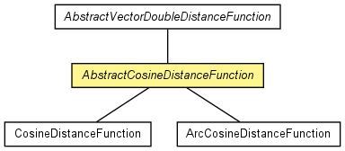

de.lmu.ifi.dbs.elki.distance.distancefunction
Class AbstractCosineDistanceFunction
java.lang.Object
 de.lmu.ifi.dbs.elki.distance.distancefunction.AbstractPrimitiveDistanceFunction<NumberVector<?,?>,DoubleDistance>
de.lmu.ifi.dbs.elki.distance.distancefunction.AbstractVectorDoubleDistanceFunction
de.lmu.ifi.dbs.elki.distance.distancefunction.AbstractCosineDistanceFunction
de.lmu.ifi.dbs.elki.distance.distancefunction.AbstractPrimitiveDistanceFunction<NumberVector<?,?>,DoubleDistance>
de.lmu.ifi.dbs.elki.distance.distancefunction.AbstractVectorDoubleDistanceFunction
de.lmu.ifi.dbs.elki.distance.distancefunction.AbstractCosineDistanceFunction
- All Implemented Interfaces:
- DistanceFunction<NumberVector<?,?>,DoubleDistance>, PrimitiveDistanceFunction<NumberVector<?,?>,DoubleDistance>, PrimitiveDoubleDistanceFunction<NumberVector<?,?>>, InspectionUtilFrequentlyScanned, Parameterizable
- Direct Known Subclasses:
- ArcCosineDistanceFunction, CosineDistanceFunction
public abstract class AbstractCosineDistanceFunction
- extends AbstractVectorDoubleDistanceFunction

Abstract base class for Cosine and ArcCosine distances.
| Methods inherited from class java.lang.Object |
clone, equals, finalize, getClass, hashCode, notify, notifyAll, toString, wait, wait, wait |
AbstractCosineDistanceFunction
public AbstractCosineDistanceFunction()
- Constructor.
angle
protected double angle(NumberVector<?,?> v1,
NumberVector<?,?> v2)
- Compute the angle between two vectors.
- Parameters:
v1 - first vectorv2 - second vector
- Returns:
- Angle
angleSparse
protected double angleSparse(SparseNumberVector<?,?> v1,
SparseNumberVector<?,?> v2)
- Compute the angle for sparse vectors.
- Parameters:
v1 - First vectorv2 - Second vector
- Returns:
- angle
instantiate
public <T extends NumberVector<?,?>> PrimitiveDistanceQuery<T,DoubleDistance> instantiate(Relation<T> relation)
- Description copied from class:
AbstractPrimitiveDistanceFunction
- Instantiate with a database to get the actual distance query.
- Specified by:
instantiate in interface DistanceFunction<NumberVector<?,?>,DoubleDistance>- Overrides:
instantiate in class AbstractPrimitiveDistanceFunction<NumberVector<?,?>,DoubleDistance>
- Parameters:
relation - Representation
- Returns:
- Actual distance query.